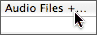

Configuring the File Player
Summary: This section describes use the AUAudioFilePlayer to play and audio file in AU Lab.
AU Lab does not directly support audio file playback, but you may use the AUAudioFilePlayer Audio Unit within AU Lab for this purpose. To play an audio file, first create a new document.
Configuring the document
For the purposes of this example a document is created using Built-in Audio and a single stereo output track. It is not necessary to add an input track. Once the document has been created, add a new Generator audio unit to the document by choosing Add Audio Unit Generator… from the Tracks menu.
From the Add AU Generator dialog, select the AUAudioFilePlayer from the Generator popup button menu and click the OK button.
Configuring the File Player
This will add a generator track to the document window for the file player. If the inspector window for the AUAudioFilePlayer does not open automatically (depending on the setting of the Open inspector window when adding an Audio Unit preference), open it by clicking the AU button ( ).
Opening the FilePlayer in the Inspector
In the FilePlayer user interface, click on the “+…”  label immediately following the section marked Audio Files. This will open a file dialog prompting the selection of an audio file to be used for playback. Once you have selected the audio file, it will automatically start playing. You may use the transport controls of the file player to control playback.
Playing a file
At this time, the AUAudioFilePlayer does not support synchronization to the host time clock. You may, however, use converter units in the generator track to change the pitch or playback speed of the file player.